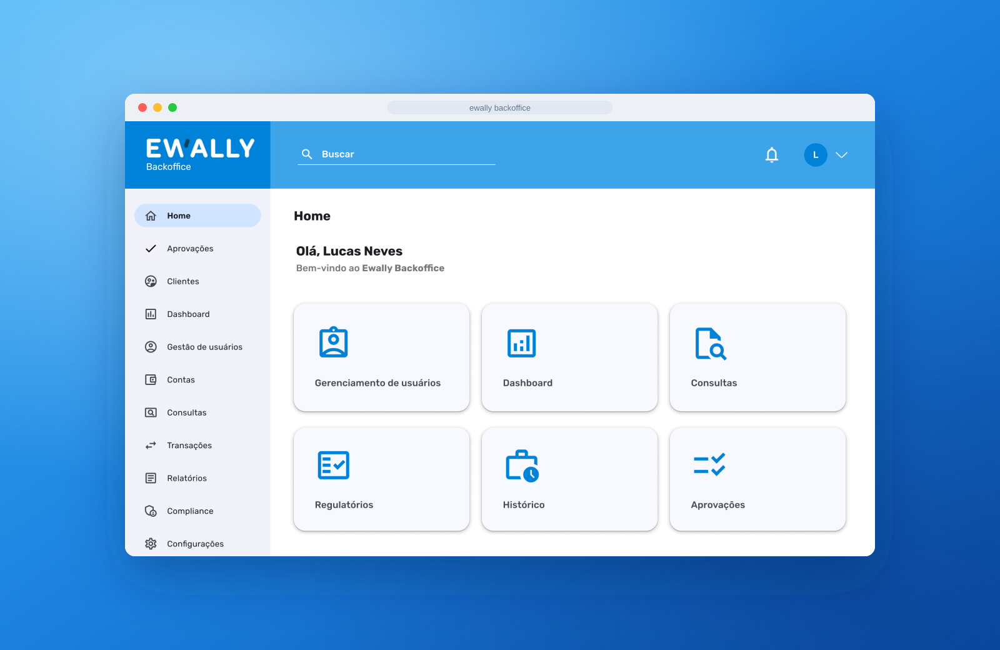
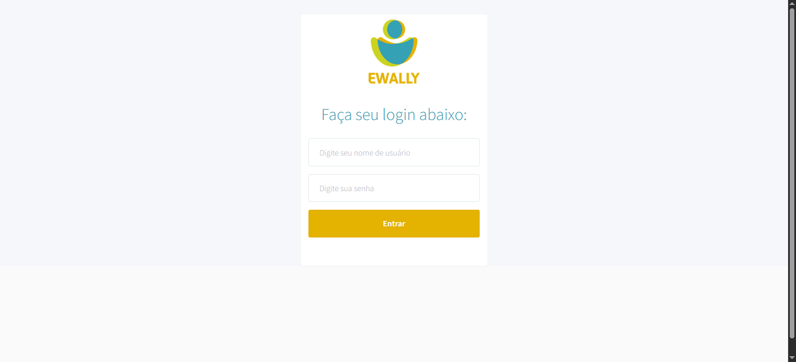
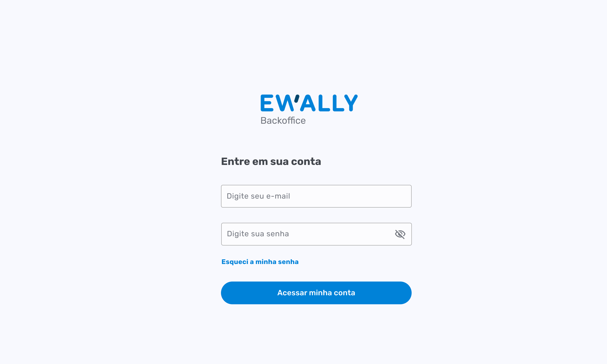
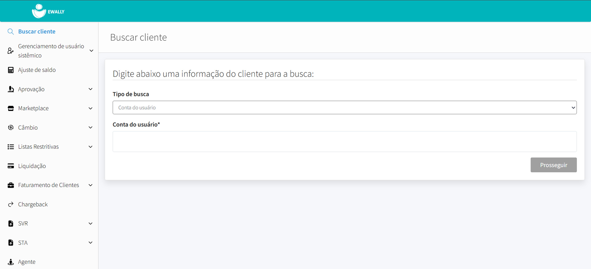
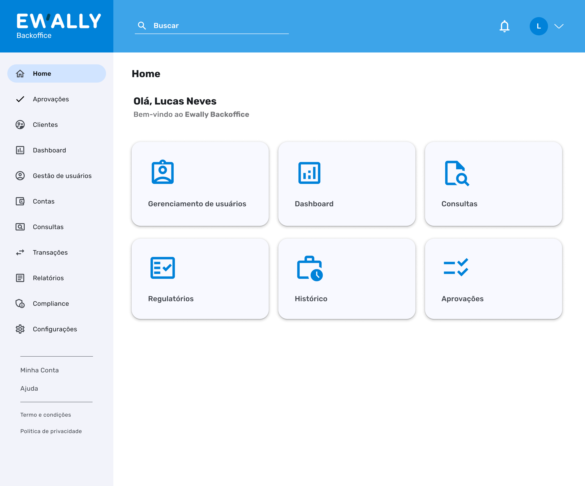
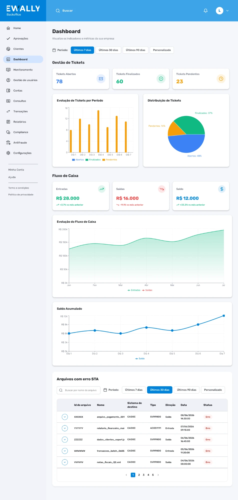
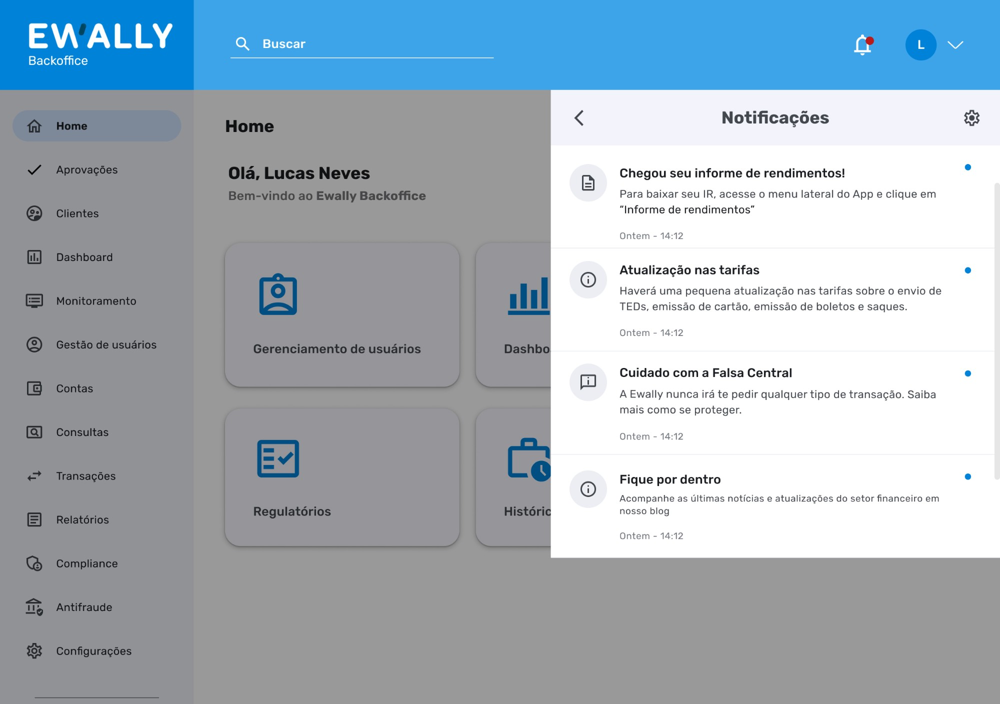
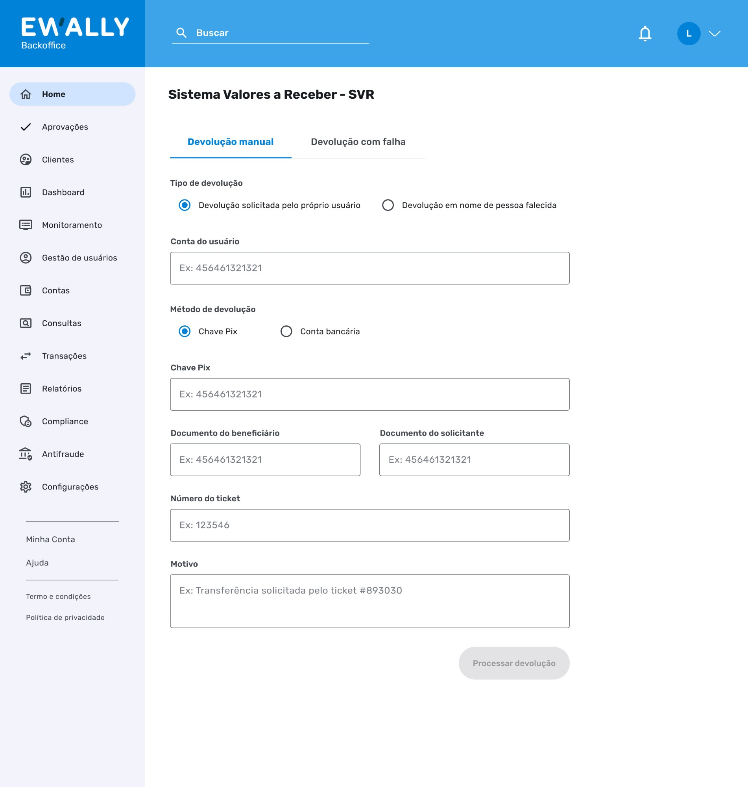
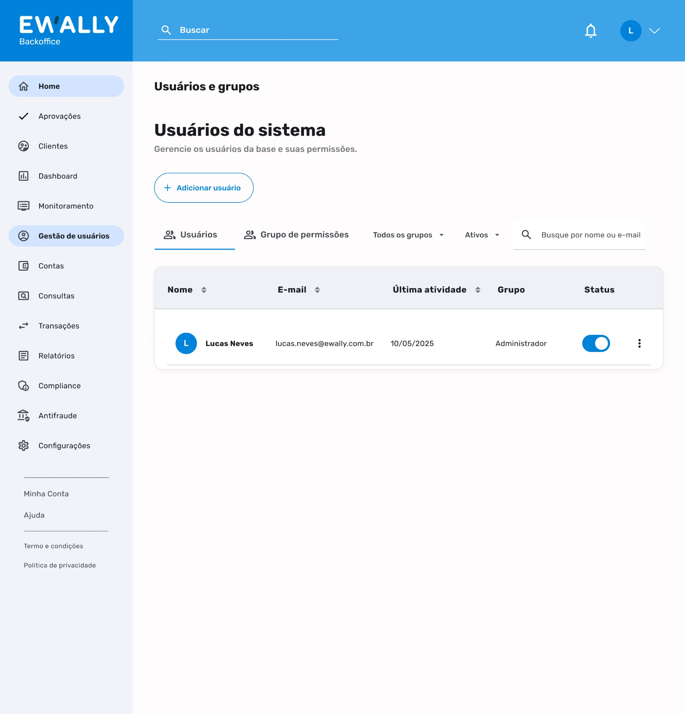

Case study · Product Design · Internal B2B tool
Ewally Backoffice, redesigning the internal portal
Turning a dated, "rigid" admin portal into the daily working tool for the people who keep a fintech running: operations, compliance, legal, and finance.

The context
The Backoffice is the portal Ewally staff use across operations, compliance, legal, and finance. It is how the company manages accounts, balances, statements, approvals, and regulatory obligations, the internal engine behind the product customers actually see.
The problem: the portal was badly dated and missing basic features to support the people using it every day. Finding information was a chore, statements froze, and operators themselves described the layout as "rigid" and "archaic". Every simple task cost extra clicks and extra tabs.
Discovery: 6 interviews, 4 teams
The goal was clear: listen to the people who use the portal to surface problems, needs, and security risks, and make that the foundation of the new Backoffice. I analyzed the transcripts of 6 interviews with people from Legal, Compliance, Operations, and Finance. The percentages below are of the total interviews that mentioned each point.
How the portal is used
Beyond those core uses, a long tail of team-specific tasks showed up: court deposits, STA integration (sending CADOCs to the Central Bank), notifications, infraction review, balance adjustments, ticket and card-revenue processing, the new SVR module (balance returns), and payments. Each team used the portal differently, and one layout was trying to serve them all.
The usability pain points
The same frustrations came up across teams and clustered into seven themes:
- Inefficient search (50%). No robust filters on client and statement search, and the search hides key data (full name, Pix key), forcing people through several screens to find one piece of information.
- Slowness and freezing (50%). Statements for clients with many transactions are slow to load, and the system freezes on large volumes of data.
- Problematic statements (33%). Errors when switching dates and in the display, plus an export that is unclear and cluttered with unnecessary subsidy data.
- Archaic interface. A layout described as uninformative, "rigid", and "archaic", with redundant fields and a lack of clarity that make navigation hard.
- Inefficient workflow. Having to open several tabs to check different information, and no per-client case history, which breaks follow-up.
- Access problems. IP blocks, password issues, and multiple accounts for the same user.
- Missing essentials. No way to export a statement as a PDF with the company header and logo, and no field to copy the user and account.
“Some find it calm and efficient for their daily work; others see it as outdated, barely functional, rigid, and archaic.”
Synthesis of the overall sentiment across interviews
From listening to priorities
With the findings in hand, I crossed frequency (how many teams felt the pain) with impact on daily work. What was cross-cutting and blocked core tasks went to the top; what was specific to one team became a dedicated module.
- Search that works. Robust filters (amount, transaction type, date) and results that already show name, Pix key, and branch and account data, ending the back and forth between screens.
- Fast, clear statements. Loading that holds up under large volumes and PDF export with header and logo, for formality and security.
- Centralization. Bring the client's data into one place, integrating the portal with other systems and with the ticketing platform.
- Security and traceability. Access segregation by team, configurable 2FA, and a required justification field for auditing.
- Small frictions, daily gain. A field to copy the user and account, a configurable session-expiration time, and processing confidentiality breaches in parallel.
Prototypes were built straight in high fidelity using Ewally's new Design System, Blu, which made the screens ready for development and consistent from the first draft.
Before and after
Login. The old one was a loose form, with no password recovery and no way to see what you typed. The new one steps into the Backoffice identity (Blu): show and hide password, "forgot my password", and a clean, trustworthy look that fits a tool handling sensitive data.


Home. The old one dropped the operator straight into a "Search client" form, with a long side menu full of uneven items (Marketplace, Exchange, Restrictive lists, STA, Agent...). The new one opens with a greeting, a global search at the top, notifications, and quick-access cards for the most frequent tasks, over a lean menu organized by function.


New modules the old portal never had
Part of the work was building from scratch features that simply did not exist and that research showed were needed:
- Dashboard. An overview right at the entrance, instead of landing straight in a form.
- Notifications. A hub to track user and Pix alerts, previously scattered or absent.
- SVR. A dedicated module for balance returns, a task that had no home of its own.
- User management and control. Access administration with segregation by team, the backbone of the security agenda.




Security and access control
In a portal that grants access to financial and protected data, security is not a detail, it is a requirement. The interviews raised concrete concerns that turned into design decisions:
- Access segregation. Team-specific modules, so each person sees only what they need.
- No more free-text fields. Cut loose input that opens the door to error and leaks.
- IP release, reviewed. Releasing IPs over Slack was considered insecure and needed its own auditable flow.
- Sensitive data under control. Reassess who can access the Compliance report and who can export statements.
- Configurable 2FA. Tune how often two-factor authentication is requested to the context of use.
- Required justification. Actions in the system ask for a reason, ideally pre-defined, to support auditing and traceability.
Status and next steps
This is a project in development. The screens and the strategy are delivered; implementation is under way.
Since it is not in production yet, there are no outcome metrics to show, and I would rather be honest about that than invent a number. What I can state is the design work itself: the research, synthesis, prioritization, and high-fidelity prototypes in the Blu Design System were led and delivered by me, as the project's UX/UI designer.
Want to talk about this project?
I can walk you through the full process and the screens in more detail.